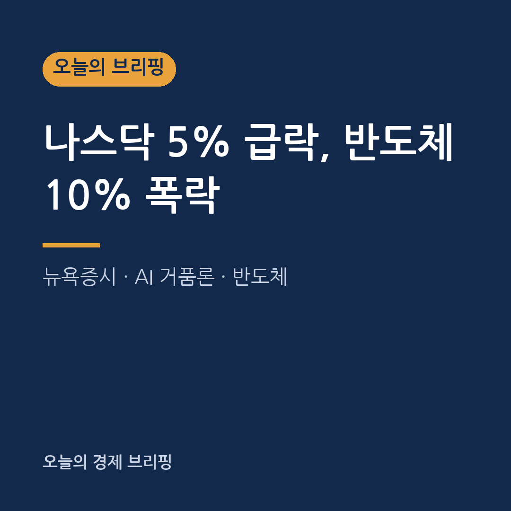

뉴욕증시 나스닥 5% 급락, 반도체 10% 폭락한 날 정리
2026-11-21-0815-naver 발행 키트 · 이 페이지는 검색에 노출되지 않습니다.
- 블로그 글쓰기 화면을 엽니다 (네이버 앱/PC, 티스토리 등).
- 제목 복사 → 제목 칸에 붙여넣기.
- 본문 전체 복사 → 본문에 붙여넣기. 그림·표가 같이 들어갑니다.
- 그림이 빠졌다면 아래 이미지에서 [복사] 후 그 자리에 붙여넣거나 [저장] 후 사진 첨부.
- 발행 설정에서 카테고리를 아래 표시된 메뉴로 고릅니다.
- 첫 문단에 내 생각 한두 줄을 더하고, 태그 복사 → 태그 칸에 붙여넣고 발행.
제목
카테고리
오늘의 브리핑태그
본문 (그림·표 포함)
휴대폰 블로그 앱에서는 그림이 같이 붙지 않을 수 있어요. 그때는 [글자만 복사] 후 아래 이미지를 저장해 [그래프1]·[표1] 자리에 첨부하세요.

출근길에 미국 증시부터 열어 보셨다면 깜짝 놀라셨을 거예요. 20일(현지시간) 뉴욕 3대 지수가 한꺼번에 크게 무너졌거든요.
▶ 지수는 얼마나 빠졌을까요
11월 20일 뉴욕증시 마감
| 지수 | 종가 | 등락률 |
|---|---|---|
| 나스닥 | 22,617.73 | -5.28% |
| S&P500 | 6,910.39 | -3.7% |
| 다우 | 48,147.33 | -1.93% |
| 필라델피아 반도체 | 8,408.59 | -10.73% |
출처: Yahoo Finance
나스닥이 5.28% 내려 22,617.73으로 마감했어요. S&P500은 3.7% 하락한 6,910.39, 다우는 1.93% 내린 48,147.33이에요.
눈에 띄는 건 필라델피아 반도체지수예요. 하루에 10.73%나 빠졌어요. 기술주 안에서도 반도체가 제일 세게 맞았다는 얘기예요.

▶ 왜 이렇게 빠졌나요
기사들이 입을 모아 꼽은 건 AI에 대한 불안이에요. AI 기업들이 쏟아붓는 투자에 비해 돈은 언제 벌까 하는 의심, 이른바 거품론이 다시 커졌다는 설명이었어요.
엔비디아가 14% 하락했다는 보도도 나왔어요. 반도체지수가 크게 흔들린 배경으로 보여요.
어제 상장한 앤트로픽도 이틀째 8.5% 내렸어요. 장중엔 공모가(상장 때 주식을 처음 파는 가격)까지 밀렸다고 해요.
다우와 S&P500도 조정(고점 대비 10% 이상 내린 구간)에 들어섰다고 연합뉴스가 전했어요. 나스닥은 코로나 이후 최악의 한 주를 보냈다는 평가도 있었어요.
▶ 환율·금리·유가는요
미국 10년물 국채금리는 4.91%로 전날 5.05%보다 내렸어요. 증시가 흔들리면 안전한 채권으로 돈이 몰리는 흐름이 나타났다는 해석이 있었어요.
원·달러 환율은 1,346.13원으로 15.73원 올랐고, WTI 유가는 83.62달러로 0.49% 올랐어요.
▶ 오늘 우리 증시에서 볼 것
반도체 비중이 큰 우리 증시가 이 충격을 어떻게 받아 내는지가 첫 번째예요. 환율이 하루 새 15원 넘게 뛴 점도 같이 지켜봐 주세요.
오늘 장 시작 전에 보유 종목 비중부터 한번 점검해 보세요. 여러분은 이번 하락을 어떻게 보세요? 댓글로 의견 나눠 주세요.


출처 (본문 맨 아래에 붙여넣기 권장)
- 연합뉴스, 나스닥 기술주 매도 급락·다우·S&P500 조정 진입 기사, https://www.yna.co.kr/view/AKR20261121009252072 - 연합뉴스, 앤트로픽 상장 이틀째 급락 기사, https://www.yna.co.kr/view/AKR20261121011100091 - 글로벌이코노믹, 뉴욕증시 AI 쇼크 엔비디아 하락 기사, https://news.google.com/rss/articles/CBMiiAFBVV95cUxNLUo1QS0zMjJRbS1kWVVVNVcyTHVfbXN2eGtnMEhkaGlvNUpxY2xQTWVTcDlaOVhNTy1mTjlJcGp5eVcxZ0xzVkVvU2VvUHF2a0dVd3pGUGNPdWNLRTJabndnekpCbTMtNXlkeHVjZmpxZDh2cjZzdVRqdmsySUNkRmdYd3FHZG0y?oc=5 - KB Think, 뉴욕마켓워치 나스닥 한 주 하락 기사, https://news.google.com/rss/articles/CBMickFVX3lxTFBSUG9lMWhrNjRRWUhab01JZjFtcFhSUERZbWtEOUUzUzlULVBCbGVMeVN0bEFCU3RmOG9Ia1RiMzVTUkhoYkN3WVdCeWV5bEJLRjRjNHlWLVFaUmx4dVE4cjJNSTloLXpzeFlrNno2dGg5dw?oc=5 - 시세: Yahoo Finance